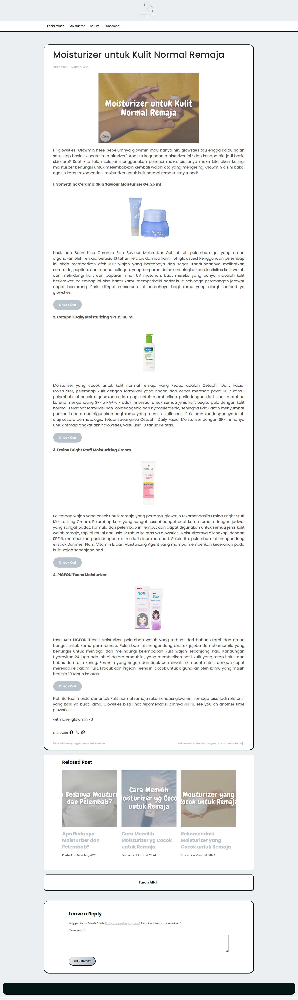
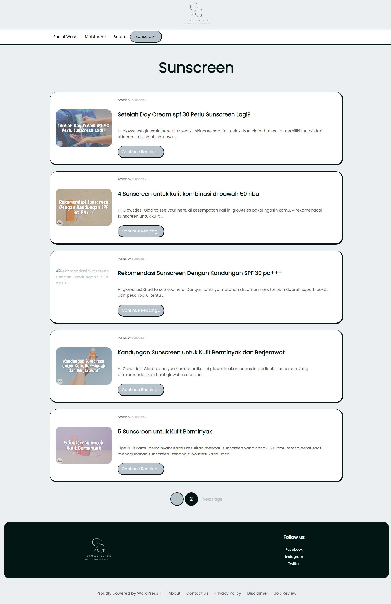

CMS
Menggunakan WordPress untuk mengelola artikel, kategori, halaman, dan workflow publikasi konten.
Website Project
Glowyguide adalah website bertema produk perawatan wajah yang menggunakan WordPress sebagai content management system dan Blogpoet sebagai tema induk. Website ini menyajikan konten skincare yang terstruktur untuk kategori face wash, sunscreen, moisturizer, dan serum.

Website ini dibangun sebagai blog niche skincare dengan fokus pada rekomendasi produk, artikel informatif, dan optimasi performa. Strategi kontennya mengutamakan keyphrase yang memiliki daya saing rendah tetapi volume pencarian tinggi, lalu setiap artikel dioptimasi sampai memiliki indikator Yoast SEO good.
Menggunakan WordPress untuk mengelola artikel, kategori, halaman, dan workflow publikasi konten.
Menggunakan Blogpoet sebagai tema induk dengan tampilan blog skincare yang ringan dan mudah dibaca.
Konten dibagi ke dalam empat kategori utama: face wash, sunscreen, moisturizer, dan serum.
Website sudah didaftarkan ke AdSense dan dilengkapi link afiliasi pada artikel produk.
Glowy Guide tidak hanya berfokus pada tampilan blog, tetapi juga pada fondasi pertumbuhan: riset keyword, struktur kategori, performa halaman, dan monetisasi yang relevan dengan konten produk skincare.
Artikel dibuat dari keyphrase yang kompetisinya rendah namun tetap memiliki potensi pencarian tinggi. Pendekatan ini membantu website membangun peluang ranking pada topik yang spesifik dan sesuai kebutuhan pembaca.


Monetisasi dilakukan melalui pendaftaran AdSense serta penempatan link afiliasi pada artikel rekomendasi produk. Tombol produk ditempatkan di bagian yang relevan setelah deskripsi, sehingga tetap mengikuti alur baca pengunjung.
Beberapa tampilan berikut memperlihatkan halaman beranda, kategori, artikel, layout sidebar, related post, comment form, dan penempatan elemen monetisasi di dalam website.
